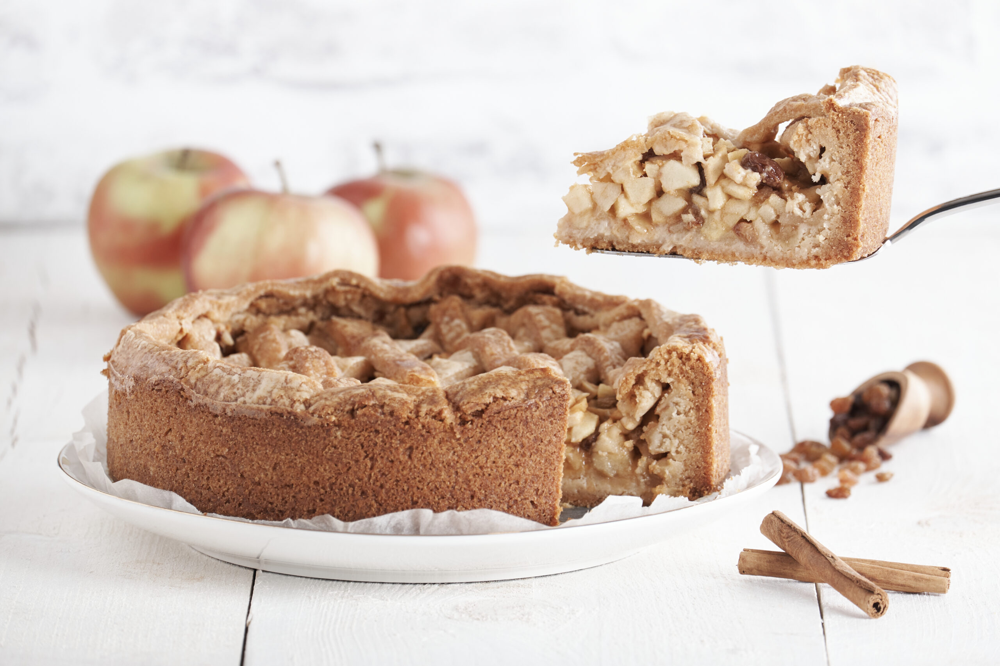

Recept voor appeltaart
Een makkelijk recept voor lekkere taart

Ik was vroeger als kleine jongen al gek op appelkwarktaart. Mijn moeder kon voor geen meter koken of bakken,
maar zelfs haar lukte het volgende recept ook altijd.
Ingrediënten
| Hoeveelheid |
Ingrediënt |
| 5 |
Appels |
| 200 gram |
Halfvolle kwark |
| 30 |
Rozijnen |
| 220 gram |
Suiker |
Bereidingswijze
- Schil de appels.
- Vet de bakvorm in.
- Gooi het allemaal in een bakblik.
- Stop het in de oven.